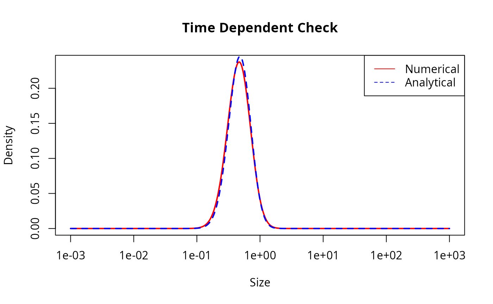
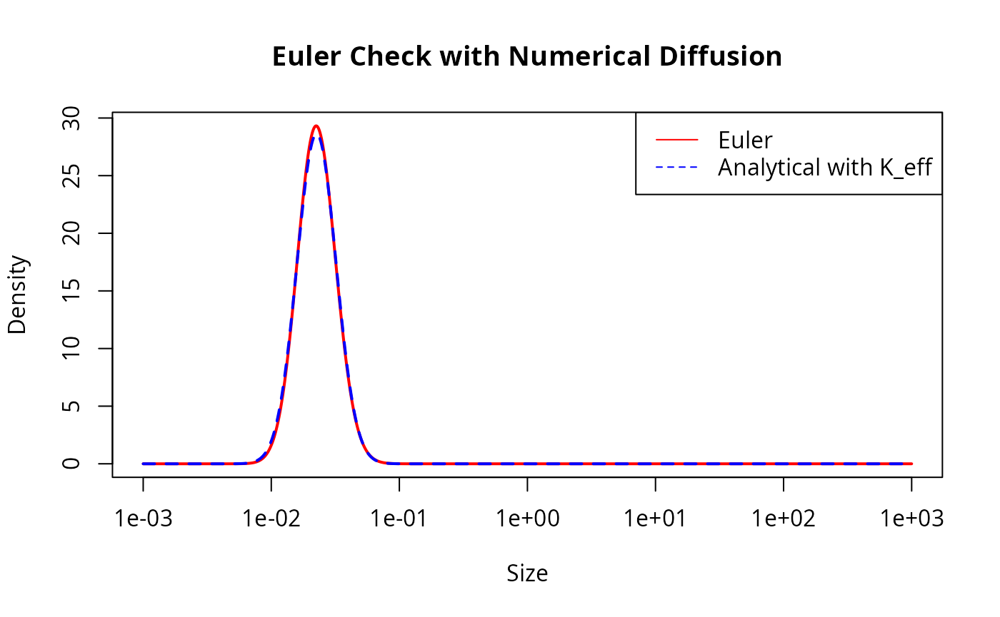

This vignette describes an analytical test for the transport equation solver used in mizer.
The transport equation
The time evolution of the size spectrum \(N(w)\) is described by the McKendrick-von Foerster equation with an added diffusion term:
\[\begin{equation} \frac{\partial N}{\partial t} + \frac{\partial}{\partial w} \left( g N - \frac{1}{2}\frac{\partial(D N)}{\partial w} \right) = -\mu N, \end{equation}\]
where \(g(w)\) is the growth rate, \(\mu(w)\) is the mortality rate and \(D(w)\) is the diffusion rate.
We will look for a solutions when the rates are power laws of the form:
\[\begin{align} g(w) &= A w^p, \\ \mu(w) &= B w^{p-1}, \\ D(w) &= K w^{p+1}. \end{align}\]
Analytical steady-state solution
We try a power-law ansatz for the solution: \[ N(w) = C w^{-\lambda}. \] Substituting these forms into the transport equation at steady state (\(\partial N / \partial t = 0\)):
\[ \frac{\partial}{\partial w} \left( A w^p C w^{-\lambda} - \frac{1}{2}\frac{\partial}{\partial w}(K w^{p+1} C w^{-\lambda}) \right) = - B w^{p-1} C w^{-\lambda}. \]
We simplify the term inside the derivative: \[ D N = K C w^{p+1-\lambda}, \] \[ \frac{\partial(D N)}{\partial w} = K C (p+1-\lambda) w^{p-\lambda}, \] \[ g N - \frac{1}{2}\frac{\partial(D N)}{\partial w} = \left( A - \frac{1}{2} K (p+1-\lambda) \right) C w^{p-\lambda}.\] Thus the flux is \(J = J_0 w^{p-\lambda}\) with \(J_0 = C \left( A - \frac{1}{2} K (p+1-\lambda) \right)\).
Differentiating the flux with respect to \(w\) gives \[ \frac{\partial J}{\partial w} = J_0 (p-\lambda) w^{p-\lambda-1}. \]
The RHS is \[ -\mu N = - B C w^{p-1-\lambda}. \]
Equating LHS and RHS gives \[ C \left( A - \frac{1}{2} K (p+1-\lambda) \right) (p-\lambda) w^{p-\lambda-1} = - B C w^{p-\lambda-1}. \]
Dividing by \(C w^{p-\lambda-1}\) (assuming \(C \neq 0\) and \(w \neq 0\)): \[ \left( A - \frac{1}{2} K (p+1-\lambda) \right) (p-\lambda) + B = 0. \]
Let \(x = p - \lambda\). Then \(p + 1 - \lambda = x + 1\). The equation becomes: \[ \left( A - \frac{1}{2} K (x+1) \right) x + B = 0. \] or, equivalently, \[ Ax - \frac{1}{2} K x^2 - \frac{1}{2} K x + B = 0. \] We multiply by -2: \[ K x^2 - (2A - K) x - 2B = 0. \]
This is a quadratic equation for \(x = p - \lambda\). The solutions are: \[ x = \frac{(2A - K) \pm \sqrt{(2A - K)^2 + 8KB}}{2K}.\]
We are interested in the solution that corresponds to the limit of small diffusion \(K \to 0\). In that limit, \(g N \sim C A w^{p-\lambda}\) and \(\frac{\partial (gN)}{\partial w} \sim C A (p-\lambda) w^{p-\lambda-1}\). The transport equation without diffusion is \(\frac{\partial (gN)}{\partial w} = -\mu N\). \[ A (p-\lambda) = -B \implies x = p-\lambda = -B/A. \] Since \(A, B > 0\), \(x\) should be negative. Let’s check the roots. \((2A-K)^2 + 8KB > (2A-K)^2\), so the square root is larger than \(|2A-K|\). The term \((2A-K)\) is positive for small \(K\). The positive root is \(\frac{(2A-K) + \text{larger}}{2K} > 0\). The negative root is \(\frac{(2A-K) - \text{larger}}{2K} < 0\). So we need the negative root:
\[ \begin{split} \lambda &= p + \frac{(2A - K) - \sqrt{(2A - K)^2 + 8KB}}{2K}\\ &=p - \frac{4B}{(2A - K) + \sqrt{(2A - K)^2 + 8KB}}. \end{split} \] The second expression above is better for numerical evaluation because it avoids the subtraction of two similarly sized numbers.
Numerical verification
We verify this analytical solution by considering a single species in
mizer and checking if the project() function keeps the
system in this steady state. First we set up a mizer model with the
power law rates:
library(mizer)
# Parameters
p <- 0.7
A <- 1
B <- 0.5
K <- 0.1
# Calculate lambda
# coefficients for K x^2 - (2A - K) x - 2B = 0
a_quad <- K
b_quad <- -(2*A - K)
c_quad <- -2*B
det <- b_quad^2 - 4 * a_quad * c_quad
x <- 4 * B / (-b_quad + sqrt(det))
lambda <- p + x
# Set up mizer params
# We create a dummy species
sp <- data.frame(species = "Test",
w_max = 1000,
w_mat = 100)
params <- newMultispeciesParams(sp, no_w = 1000, min_w = 1e-3,
info_level = 0)
# Set initial N to analytical solution
initialN(params) <- matrix(w(params)^(-lambda), nrow = 1, byrow = TRUE)
# Define custom rate functions
# Growth
start_growth <- function(params, ...) {
matrix(A * params@w^p, nrow = 1, byrow = TRUE)
}
params <- setRateFunction(params, "EGrowth", "start_growth")
# Mort
start_mort <- function(params, ...) {
matrix(B * params@w^(p - 1), nrow = 1, byrow = TRUE)
}
params <- setRateFunction(params, "Mort", "start_mort")
# Diffusion
ext_diffusion(params)[1, ] <- K * w(params)^(p + 1)
# RDD (Constant Flux)
params@species_params$constant_reproduction <- getRequiredRDD(params)
params <- setRateFunction(params, "RDD", "constantRDD")We can now project this forward in time and check that the result stays the same.
# Run project
# We verify that N stays constant.
sim <- project(params, t_max = 1, dt = 0.1, method = "predictor-corrector")
# Compare final N with initial N
n0 <- initialN(params)[1, ]
n1 <- finalN(sim)[1, ]
# Plot
plot(w(params), n0, log="xy", type="l", col="blue", lwd=2,
main="Comparison of numerical and analytical solution",
xlab="Size", ylab="Density")
lines(w(params), n1, col="red", lty=2, lwd=2)
legend("topright", legend=c("Analytical", "Numerical"),
col=c("blue", "red"), lty=c(1, 2))
# Calculate relative error
rel_err <- abs(n1 - n0) / n0
# ignore last 100 bins because they are affected by the right boundary
max_rel_err <- max(rel_err[1:980])
print(paste("Maximum relative error:", max_rel_err))
#> [1] "Maximum relative error: 0.00596547751519771"
if (max_rel_err < 0.01) {
print("Test passed: Numerical solution stays close to analytical steady state.")
} else {
print("Test failed: Numerical solution deviates from analytical steady state.")
}
#> [1] "Test passed: Numerical solution stays close to analytical steady state."Time-dependent analytical solution
To facilitate an analytical solution for time-dependent problems, we first transform the size variable \(w\) to a new variable \(x\): \[ x = \frac{w^{1-p}}{1-p}. \] Assuming \(p \neq 1\). Then \(w = ((1-p)x)^{\frac{1}{1-p}}\) and \(\frac{dx}{dw} = w^{-p}\).
We define the density in \(x\)-space, \(\tilde{N}(x, t)\), such that \(\tilde{N}(x, t) dx = N(w, t) dw\). Thus \[ \tilde{N}(x, t) = N(w, t) \frac{dw}{dx} = N(w, t) w^p. \]
Substituting this into the transport equation and simplifying leads to a PDE of the form: \[ \frac{\partial \tilde{N}}{\partial t} = V x \frac{\partial^2 \tilde{N}}{\partial x^2} + (V - U) \frac{\partial \tilde{N}}{\partial x} - \frac{b}{x} \tilde{N} ,\] where \(U = A - \frac{1}{2}K\), \(V = \frac{1}{2} K (1-p)\), \(b = \frac{B}{1-p}\).
The fundamental solution (Green’s function) for this equation, describing the evolution of an initial Dirac delta distribution \(\tilde{N}(x, 0) = \delta(x - x_0)\), is given by \[ G(x, t; x_0) = \frac{1}{Vt} \left( \frac{x}{x_0} \right)^{\frac{U}{2V}} \exp\left( -\frac{x+x_0}{Vt} \right) I_\nu \left( \frac{2\sqrt{xx_0}}{Vt} \right), \] where \(I_\nu\) is the modified Bessel function of the first kind of order \(\nu\), given by \[ \nu = \frac{1}{V} \sqrt{U^2 + 4Vb} .\]
The solution in terms of the original size distribution \(N(w, t)\) is then \[ N(w, t) = G(x(w), t; x(w_0)) w^{-p} .\]
Numerical verification
We verify this time-dependent solution by starting the simulation with the analytical distribution at a small time \(t_{start} > 0\) (to avoid the singularity at \(t=0\)) and projecting it to a later time \(t_{end}\).
# Function to calculate N analytic
N_analytic <- function(w, t, w0, t0, K_eff = 0.1) {
# Parameters
p <- 0.7
A <- 1
B <- 0.5
# Transformed parameters
U <- A - 0.5 * K_eff
V <- 0.5 * K_eff * (1 - p)
b <- B / (1 - p)
nu <- sqrt((U/V)^2 + 4 * b / V)
# Time elapsed
dt <- t - t0
if (dt <= 0) stop("t must be greater than t0")
# Transform to x
x <- w^(1 - p) / (1 - p)
x0 <- w0^(1 - p) / (1 - p)
# Argument for Bessel
z <- 2 * sqrt(x * x0) / (V * dt)
# Logarithm of N_tilde using scaled Bessel to avoid overflow
bessel_scaled <- besselI(z, nu, expon.scaled = TRUE)
log_N_tilde <- -log(V * dt) +
(U / (2 * V)) * log(x / x0) -
(x + x0) / (V * dt) +
z +
log(bessel_scaled)
N_tilde <- exp(log_N_tilde)
# Transform back to N(w)
N <- N_tilde * w^(-p)
return(N)
}
# Initial Condition
w0 <- 1e-2
t_start <- 0.1
t_end <- 2
# Set initial N from analytical solution
initial_n <- N_analytic(w(params), t_start, w0, 0)
initialN(params) <- matrix(initial_n, nrow = 1, byrow = TRUE)We can simplify the left boundary condition because it is far enough away from the Gaussian for us to set the solution to 0 there.
# Set RDD to 0
params@species_params$constant_reproduction <- 0
params <- setRateFunction(params, "RDD", "constantRDD")Now we project forward in time.
# Run project
sim <- project(params, t_max = t_end - t_start, dt = 0.05,
t_save = t_end - t_start,
method = "predictor-corrector")
# Compare
final_n_num <- finalN(sim)[1, ]
final_n_ana <- N_analytic(w(params), t_end, w0, 0)
# Plot
plot(w(params), final_n_num, log = "x", type = "l", col = "red", lwd = 2,
main = "Time Dependent Check", xlab = "Size", ylab = "Density")
lines(w(params), final_n_ana, col = "blue", lty = 2, lwd = 2)
legend("topright", legend = c("Numerical", "Analytical"),
col = c("red", "blue"), lty = c(1, 2))
This looks good but let us also look at the agreement quantitatively:
# Robust comparison metrics
# 1. Total Abundance (Conservation)
total_n_num <- sum(final_n_num * params@dw)
total_n_ana <- sum(final_n_ana * params@dw)
rel_err_total <- abs(total_n_num - total_n_ana) / total_n_ana
# 2. Peak Location
peak_idx_num <- which.max(final_n_num)
peak_idx_ana <- which.max(final_n_ana)
peak_w_num <- w(params)[peak_idx_num]
peak_w_ana <- w(params)[peak_idx_ana]
rel_err_peak_loc <- abs(peak_w_num - peak_w_ana) / peak_w_ana
# 3. Peak Height
peak_val_num <- max(final_n_num)
peak_val_ana <- max(final_n_ana)
rel_err_peak_val <- abs(peak_val_num - peak_val_ana) / peak_val_ana
print(paste("Total Abundance Error:", rel_err_total))
#> [1] "Total Abundance Error: 0.00480520170128005"
print(paste("Peak Location Error:", rel_err_peak_loc))
#> [1] "Peak Location Error: 0.0406391712906862"
print(paste("Peak Height Error:", rel_err_peak_val))
#> [1] "Peak Height Error: 0.0323776398076434"
# Pass conditions:
# < 0.5% abundance error,
# < 5% location shift,
# < 4% height difference (diffusive flattening)
if (rel_err_total < 0.005 &&
rel_err_peak_loc < 0.05 &&
rel_err_peak_val < 0.04) {
print("Time-dependent test passed.")
} else {
print("Time-dependent test failed.")
}
#> [1] "Time-dependent test passed."Numerical diffusion
In the Euler method
The Euler method uses a first-order upwind treatment of the advective growth term. This introduces numerical diffusion. For locally constant growth rate and grid spacing, the expected numerical diffusion is \[ D_\mathrm{num} \approx g(w) \Delta w + g(w)^2 \Delta t. \]
On the logarithmic mizer grid we have approximately \(\Delta w = (\beta_\mathrm{grid} - 1)w\). To keep the analytical solution in the same power-law family, we use the special case \(p = 1\). Then \(g(w) = A w\) and both numerical diffusion terms scale like \(w^2\): \[ D_\mathrm{num}(w) \approx \left(A(\beta_\mathrm{grid} - 1) + A^2 \Delta t\right)w^2. \] So the Euler method with physical diffusion \(K w^2\) should behave like the continuous equation with \[ K_\mathrm{eff} = K + A(\beta_\mathrm{grid} - 1) + A^2 \Delta t. \]
For \(p = 1\) the transformed variable is \(x = \log w\). The density \(\tilde N(x, t) = w N(w, t)\) satisfies an advection-diffusion equation with constant diffusion and constant mortality. The Green’s function is therefore a lognormal density: \[ N(w,t) = \frac{\exp[-B(t-t_0)]}{w} \phi\left(\log w;\, \log w_0 + \left(A - \frac{K_\mathrm{eff}}{2}\right)(t-t_0), K_\mathrm{eff}(t-t_0)\right), \] where \(\phi(x; m, v)\) is the normal density with mean \(m\) and variance \(v\).
# Parameters for the Euler numerical diffusion check
p_euler <- 1
A_euler <- 1
B_euler <- 0.5
K_euler <- 0.1
dt_euler <- 0.01
N_lognormal <- function(w, t, w0, t0, K_eff) {
dt <- t - t0
if (dt <= 0) stop("t must be greater than t0")
x <- log(w)
mean_x <- log(w0) + (A_euler - 0.5 * K_eff) * dt
exp(-B_euler * dt) *
dnorm(x, mean = mean_x, sd = sqrt(K_eff * dt)) / w
}
start_growth_euler <- function(params, ...) {
matrix(A_euler * params@w^p_euler, nrow = 1, byrow = TRUE)
}
start_mort_euler <- function(params, ...) {
matrix(B_euler * params@w^(p_euler - 1), nrow = 1, byrow = TRUE)
}
params_euler <- newMultispeciesParams(sp, no_w = 1000, min_w = 1e-3,
info_level = 0)
params_euler <- setRateFunction(params_euler, "EGrowth",
"start_growth_euler")
params_euler <- setRateFunction(params_euler, "Mort", "start_mort_euler")
ext_diffusion(params_euler)[1, ] <- K_euler * w(params_euler)^2
# The pulse stays well away from the left boundary, so no recruitment enters.
params_euler@species_params$constant_reproduction <- 0
params_euler <- setRateFunction(params_euler, "RDD", "constantRDD")
beta_grid <- w(params_euler)[2] / w(params_euler)[1]
K_num <- A_euler * (beta_grid - 1) + A_euler^2 * dt_euler
K_eff <- K_euler + K_num
w0_euler <- 1e-2
t_start_euler <- 0.1
t_end_euler <- 1
initial_n_euler <- N_lognormal(w(params_euler), t_start_euler, w0_euler,
0, K_eff)
initialN(params_euler) <- matrix(initial_n_euler, nrow = 1, byrow = TRUE)We project with the Euler method and compare against the exact solution with the effective diffusion coefficient.
sim_euler <- project(params_euler,
t_max = t_end_euler - t_start_euler,
dt = dt_euler,
t_save = t_end_euler - t_start_euler,
t_start = t_start_euler,
method = "euler",
progress_bar = FALSE)
final_n_euler <- finalN(sim_euler)[1, ]
final_n_euler_ana <- N_lognormal(w(params_euler), t_end_euler, w0_euler,
0, K_eff)
plot(w(params_euler), final_n_euler, log = "x", type = "l", col = "red",
lwd = 2, main = "Euler Check with Numerical Diffusion",
xlab = "Size", ylab = "Density")
lines(w(params_euler), final_n_euler_ana, col = "blue", lty = 2, lwd = 2)
legend("topright", legend = c("Euler", "Analytical with K_eff"),
col = c("red", "blue"), lty = c(1, 2))
total_euler <- sum(final_n_euler * params_euler@dw)
total_euler_ana <- sum(final_n_euler_ana * params_euler@dw)
rel_err_total_euler <- abs(total_euler - total_euler_ana) / total_euler_ana
peak_idx_euler <- which.max(final_n_euler)
peak_idx_euler_ana <- which.max(final_n_euler_ana)
peak_w_euler <- w(params_euler)[peak_idx_euler]
peak_w_euler_ana <- w(params_euler)[peak_idx_euler_ana]
rel_err_peak_loc_euler <- abs(peak_w_euler - peak_w_euler_ana) /
peak_w_euler_ana
peak_val_euler <- max(final_n_euler)
peak_val_euler_ana <- max(final_n_euler_ana)
rel_err_peak_val_euler <- abs(peak_val_euler - peak_val_euler_ana) /
peak_val_euler_ana
print(paste("Expected numerical diffusion coefficient:", K_num))
#> [1] "Expected numerical diffusion coefficient: 0.0239254075588153"
print(paste("Effective diffusion coefficient:", K_eff))
#> [1] "Effective diffusion coefficient: 0.123925407558815"
print(paste("Total Abundance Error:", rel_err_total_euler))
#> [1] "Total Abundance Error: 0.00112189285798662"
print(paste("Peak Location Error:", rel_err_peak_loc_euler))
#> [1] "Peak Location Error: 0"
print(paste("Peak Height Error:", rel_err_peak_val_euler))
#> [1] "Peak Height Error: 0.0245757881629701"
if (rel_err_total_euler < 0.005 &&
rel_err_peak_loc_euler < 0.005 &&
rel_err_peak_val_euler < 0.05) {
print("Euler numerical diffusion test passed.")
} else {
print("Euler numerical diffusion test failed.")
}
#> [1] "Euler numerical diffusion test passed."In the predictor-corrector method
The first-order upwind discretisation of the growth term introduces numerical diffusion even when the predictor-corrector time step is used. For this method the leading-order time discretisation diffusion is removed, so the expected additional diffusion is only the spatial contribution \[D_\mathrm{num}(w) \approx g(w) \Delta w.\] On the logarithmic mizer grid this has the same power-law form as the physical diffusion: \[ D_\mathrm{num}(w) \approx A(\beta_\mathrm{grid} - 1) w^{p+1}. \] We can therefore check whether the agreement improves if the exact solution is evaluated with \[K_\mathrm{eff} = K + A(\beta_\mathrm{grid} - 1).\]
beta_grid <- w(params)[2] / w(params)[1]
K_num_pc <- A * (beta_grid - 1)
K_eff_pc <- K + K_num_pc
final_n_ana_pc <- N_analytic(w(params), t_end, w0, 0, K_eff_pc)
total_n_ana_pc <- sum(final_n_ana_pc * params@dw)
rel_err_total_pc <- abs(total_n_num - total_n_ana_pc) / total_n_ana_pc
peak_idx_ana_pc <- which.max(final_n_ana_pc)
peak_w_ana_pc <- w(params)[peak_idx_ana_pc]
rel_err_peak_loc_pc <- abs(peak_w_num - peak_w_ana_pc) / peak_w_ana_pc
peak_val_ana_pc <- max(final_n_ana_pc)
rel_err_peak_val_pc <- abs(peak_val_num - peak_val_ana_pc) / peak_val_ana_pc
print(paste("Predictor-corrector numerical diffusion coefficient:", K_num_pc))
#> [1] "Predictor-corrector numerical diffusion coefficient: 0.0139254075588153"
print(paste("Predictor-corrector effective diffusion coefficient:", K_eff_pc))
#> [1] "Predictor-corrector effective diffusion coefficient: 0.113925407558815"
print(paste("Adjusted Total Abundance Error:", rel_err_total_pc))
#> [1] "Adjusted Total Abundance Error: 0.00066753836710786"
print(paste("Adjusted Peak Location Error:", rel_err_peak_loc_pc))
#> [1] "Adjusted Peak Location Error: 0"
print(paste("Adjusted Peak Height Error:", rel_err_peak_val_pc))
#> [1] "Adjusted Peak Height Error: 0.0226085133793947"
if (rel_err_total_pc < rel_err_total &&
rel_err_peak_loc_pc <= rel_err_peak_loc &&
rel_err_peak_val_pc < rel_err_peak_val) {
print("Accounting for numerical diffusion improves the agreement.")
} else {
print("Accounting for numerical diffusion does not improve all metrics.")
}
#> [1] "Accounting for numerical diffusion improves the agreement."
# Pass conditions:
# < 0.5% abundance error,
# < 5% location shift,
# < 4% height difference (diffusive flattening)
if (rel_err_total_pc < 0.001 &&
rel_err_peak_loc_pc < 1e-6 &&
rel_err_peak_val_pc < 0.03) {
print("Numerical diffusion test passed.")
} else {
print("Numerical diffusion test failed.")
}
#> [1] "Numerical diffusion test passed."